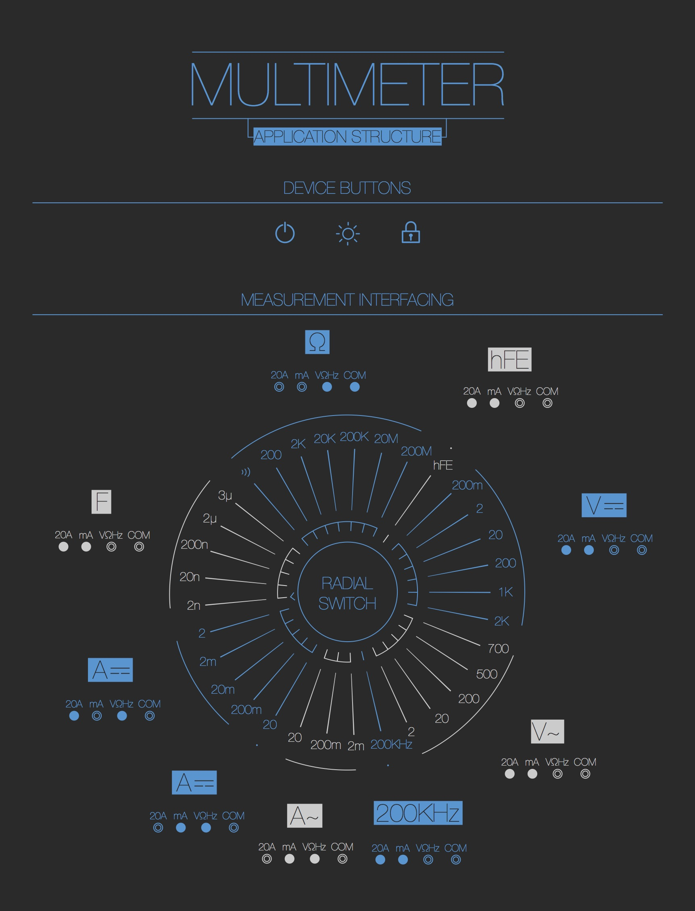
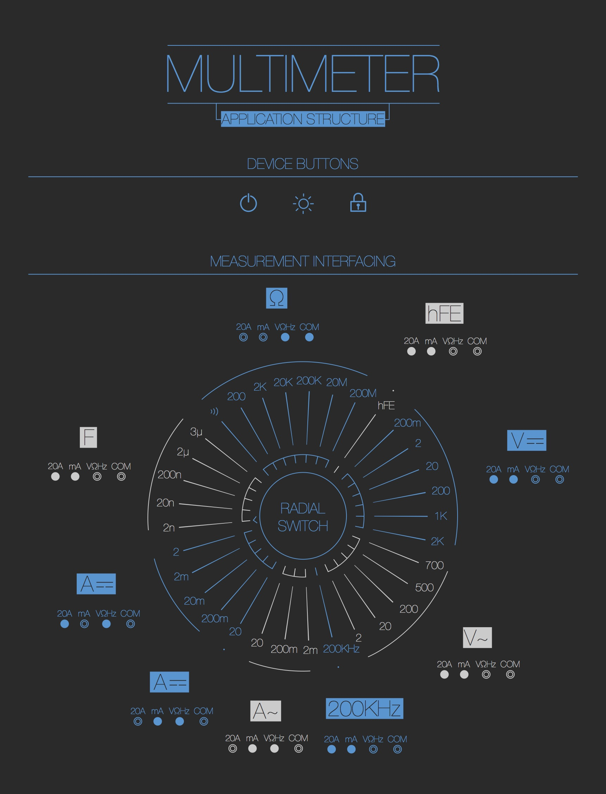

The Multimeter Touch Prototype
This is the first software prototype of the redesign project of the Visual Interfaces project @FH-Potsdam. Open this prototype in a new window here.
Analysing the Interface Structure

This is the first software prototype of the redesign project of the Visual Interfaces project @FH-Potsdam. Open this prototype in a new window here.
